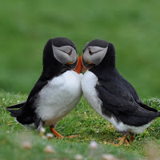

Animal del día
Fratercula es un género de aves caradriformes de la familia Alcidae conocidos vulgarmente como frailecillos. Son propios de zonas árticas y subárticas.
Otros animales destacados


El zorro común o zorro rojo (Vulpes vulpes).
El loro arco iris (Trichoglossus haematodus).